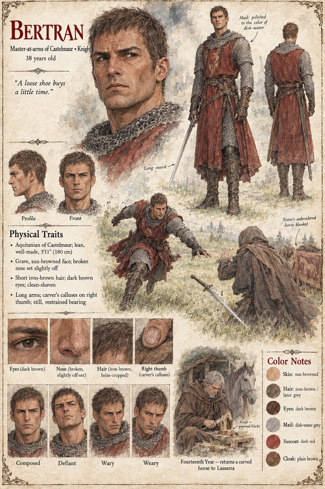
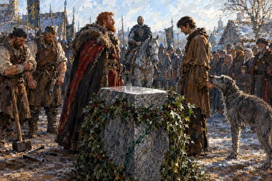

Bertran
Sir Bertran de Lanta · master-at-arms of Castelmaur · knight · 38 years old
A stern, lean, well-made man of thirty-eight who has fought in six minor wars and won five, and who goes through life by double entry: debts incurred and debts paid, blows given and blows returned. On the green at Vilarnau he is disarmed in a single movement by a foreigner who then sheathes both swords and bows with the painful apology of a man who has spilled wine, having left him alive by choice. Bertran has no column in which to enter a mercy. He does not hate the man; it is a respect so complete that it has nowhere to go. In the evenings he carves small pearwood horses and sends them, in rags, to his widowed sister's four children, who have never been told who makes them.
On the sixteenth of Jorren, when the baron orders the stone broken and the guest taken, he rides down to the mill alone and without a banner, knocks at the door, and tells Gersenda once what is coming. At the end of the yard, without turning, he adds the one line that was not a warning. On the night of the torches he is given forty men and spends forty minutes in a thicket on a perfectly sound hoof. He asks leave to resign his sword, is refused, and rides out of the gate without it. In the fourteenth year he comes to Lasserra on foot, sets a small grey gelding on the bench of the last house, and is not seen again.
“Tell him that we are even.”
Appears In

Related Records

On the morning of the weighing at Vilarnau, Sir Bertran brings his long sword down from the saddle and loses it, spinning, to a stranger's left hand; the bailiff Arnaut stands by with his men, and a boy named Peire has clapped a hand over his mouth to keep from laughing.

On the green at Vilarnau Baron Aimeric stands over the holly-wreathed stone, two of his masons beside their broken wedges, while Ors puts his nose into the stranger's palm and Bertran watches from his grey gelding; the guest has just said that this is his door.